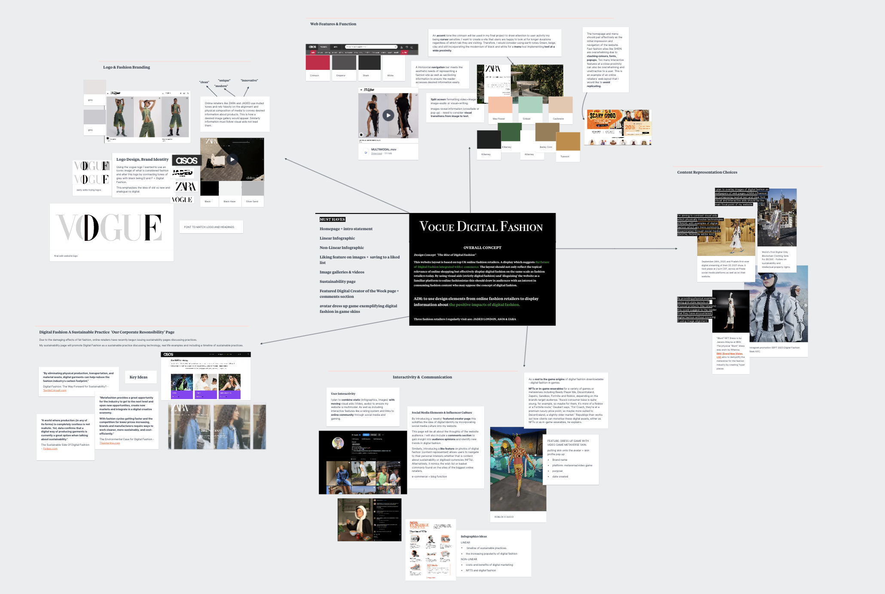

Page Sections
Audience (IL Tasks 1/2)Audience Journey Mapping (Task 3)
Design & Audience (Week 2 Lab Tasks 1/2)
Moodboard (Lab Task 3)
Audience (IL Tasks 1/2)
User Profile
Shared by Stephane Feugere, WWD Women's Wear Daily at wwd.com.
Shared by Whitney Meers, PCGamesn at pcgamesn.com.
Audience Journey Mapping (Task 3)
CORE READING: The Value of Customer Journey Maps: A UX Designer’s Personal Journey By Joel Flom
Customer journey maps are documents that visually illustrate an individual customer’s needs, the series of interactions that are necessary to fulfil those needs, and the resulting emotional states a customer experiences throughout the process.
CASE STUDY
Over the last 10 years, MyBoeingFleet has allowed customers to view detailed maintenance data and purchase replacement parts for their fleet of Boeing aircraft. This information-rich portal has become a trusted source of data and is integral to airlines’ operations. Although MyBoeingFleet was innovative for its time, Boeing began to realize that the ways in which it connected customers to information and supported specific individual workflows merited investigation.
CREATING EFFECTIVE CUSTOMER JOURNEY MAPS - APPLIED TO AUDIENCE CONSIDERATION
- Research based - on ethnographic research which serves as a contextualised inquiry that allows researchers to experience a day in the life of a customer.
- Behaviour based – assigning character traits to job roles – personas based on task functions like investigating or purchasing.
- Identifying Pain Points - To fill the gap between their perceived notions and real customer experience, we chose to produce journey maps based on scenarios that revealed customers’ pain points, frustrations, and roadblocks that required our attention. This helped clearly illustrate some of the issues customers encountered and allowed stakeholders to shed their assumptions and begin looking toward a more optimal future state.
- Displayed effectively – using physical media can help to clearly display ideas and allow for interactions e.g. a poster board.
- Adapting Service Design - rethink the role that digital channels play in influencing and living up to their commitment to service.
Task 1 & Task 2
Creating an audience profile highlighted how to accommodate my audience by structuring my webpage like online fashion retailers, websites like ZARA, JADED London and ASOS and evaluating web features to avoid using the SHEIN website (see mood board for examples).
Design & Audience (Week 2 Lab Tasks 1/2)
Creating a mood board allowed me to distinguish pages my website needs to accommodate to the interests of the user:
- A Main Page - what is digital fashion, description and introducing terminology
- Digital Fashion Examples Page - how is it changing the industry?, EXAMPLES: streaming fashion online, 3D animation, blockchain clothing, digital innovating to physical creation.
- Weekly Creator Page - features online digital fashion creator (social media focused).
- Sustainability Page - sustainable manufacturing processes, the longevity of fashion pieces (used in cultural heritage).
- Avatar Building game - applying iconic gaming skins to an avatar reveals information about pieces - (reference to gaming origins and normalisation of digital fashion through building characters digitally).
Moodboard (Lab Task 3)
Go to the top.